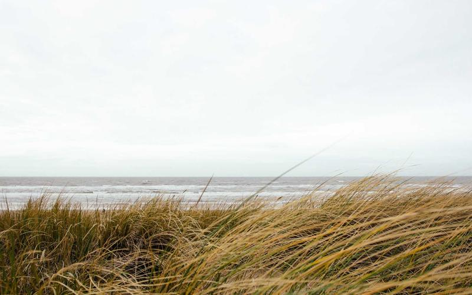

EcoTienda
Rediseño de interfaz para una tienda online de productos ecológicos
Rediseño de interfaz para una tienda online de productos ecológicos

EcoTienda nació como encargo de una pequeña empresa familiar dedicada a la venta de productos ecológicos y de comercio justo. Su sitio web anterior era anticuado, con una navegación confusa y un proceso de compra que generaba una alta tasa de abandono del carrito. El reto era rediseñar la experiencia completa sin perder la esencia cercana y natural de la marca.
El proceso comenzó con un análisis de la tienda existente, identificando los puntos de fricción mediante mapas de calor y entrevistas a tres usuarios habituales. A partir de ahí se definió una nueva arquitectura de información y se elaboraron wireframes de baja fidelidad antes de pasar al diseño visual en Figma.
La paleta de colores se redujo a verdes, blancos y tonos tierra para reforzar la identidad ecológica. La tipografía elegida combina una sans-serif para cuerpo de texto con una display más orgánica para títulos, logrando un equilibrio entre modernidad y calidez.
Año: 2024 | Rol: Diseño UI/UX | Duración: 6 semanas

El mayor desafío fue convencer al cliente de simplificar el proceso de compra. Tenía muchos campos obligatorios que consideraba necesarios para su logística interna, pero que resultaban disuasorios para los usuarios. Se propuso una solución intermedia: mantener los campos en el sistema pero hacer que solo los imprescindibles fueran visibles por defecto, con una opción de "más información" opcional.
Otro reto fue la gestión de la galería de imágenes de producto: los archivos del cliente tenían calidades y proporciones muy dispares. Se estableció una guía de fotografía de producto y se crearon máscaras en CSS para unificar las proporciones sin distorsionar las imágenes.
El prototipo fue validado con usuarios nuevos que completaron el proceso de compra sin ayuda en menos de 4 minutos. El cliente implementó el diseño con su equipo de desarrollo y reportó una reducción del 35% en abandonos de carrito durante el primer mes. Este proyecto me enseñó la importancia de involucrar al cliente en cada iteración del diseño y documentar bien cada decisión visual para facilitar el desarrollo posterior.
| Fase | Duración | Entregable |
|---|---|---|
| Investigación UX | 1 semana | Informe de hallazgos |
| Diseño visual | 3 semanas | Prototipo en Figma |
| Maquetación HTML/CSS | 2 semanas | Versión estática |
| Revisión y entrega | 1 semana | Proyecto validado |